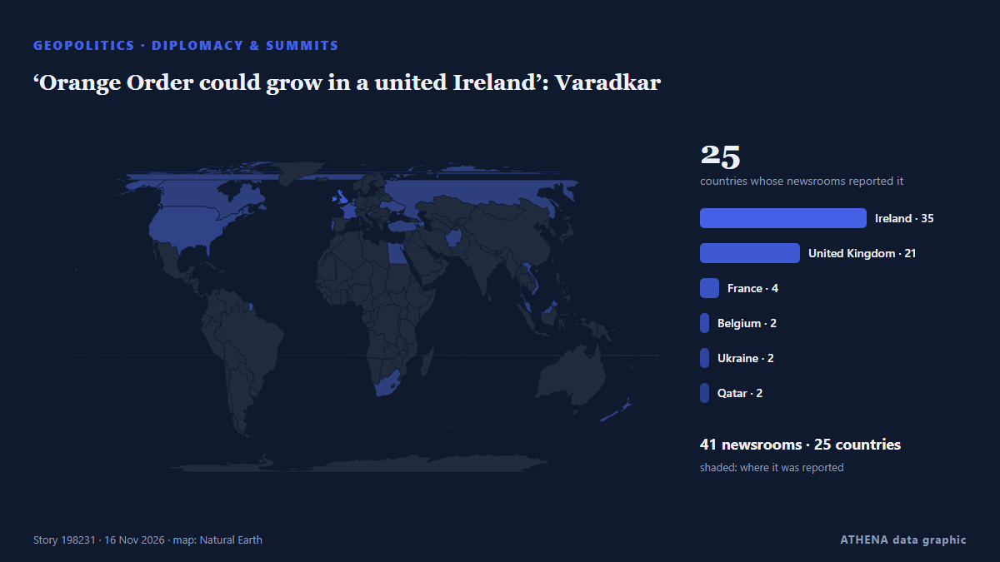

Διπλωματία & σύνοδοι
ΧορηγούμενοΠαρουσιάζεται από  Cybernetics and Artificial Intelligence Lab Welcome to the Cybernetics and Artificial Intelligence Laboratory, established at the Department of Business Administration of the National and Kapodistrian University of Athens. The lab is headed by Professor Dimitrios Thomakos. The lab aims to do research that can be published in top venues. Our research uses tools and methods of Artificial Intelligence, and lies in the following areas: - Forecasting - Decision making - Cyber security - Finance We are always looking forward to collaborating with exceptional students!
Cybernetics and Artificial Intelligence Lab Welcome to the Cybernetics and Artificial Intelligence Laboratory, established at the Department of Business Administration of the National and Kapodistrian University of Athens. The lab is headed by Professor Dimitrios Thomakos. The lab aims to do research that can be published in top venues. Our research uses tools and methods of Artificial Intelligence, and lies in the following areas: - Forecasting - Decision making - Cyber security - Finance We are always looking forward to collaborating with exceptional students!
| 4 Νοε | 0 |
|---|---|
| 5 Νοε | 0 |
| 6 Νοε | 0 |
| 7 Νοε | 0 |
| 8 Νοε | 1 |
| 9 Νοε | 0 |
| 10 Νοε | 0 |
| 11 Νοε | 0 |
| 12 Νοε | 2 |
| 13 Νοε | 5 |
| 14 Νοε | 9 |
| 15 Νοε | 4 |
| 16 Νοε | 3 |
| 17 Νοε | 0 |
Οι τίτλοι των ειδήσεων παρουσιάζονται στα αγγλικά, όπως δημοσιεύτηκαν.

‘Orange Order could grow in a united Ireland’: Varadkar
Opposition parties had piled on pressure for the Government to make preparations for a debate on a united Ireland. από The Irish News (Belfast)
Xi, Trump and Putin to hold first trilateral summit in China
Leaders expected to discuss nuclear disarmament, while Ukraine may remain off the agenda. από News of Bahrain
Kremlin says Putin-Xi-Trump meeting in China will have major impact on global affairs
The three leaders are due to sit down together at the same time as China hosts a summit of the APEC forum in Shenzhen. από The Moscow Times
EU forces board suspected Russian shadow fleet tanker in Mediterranean
EU foreign policy chief Kaja Kallas says vessel was sailing under false flag as EU prepares fresh Russia sanctions. από Anadolu Agency (English)
US and Russia to oppose talks on limiting autonomous weapons
Major military nations argue that existing humanitarian law is enough to govern warfare. από The Straits Times
Four foreign ministers urge Israel to allow ’rapid and unimpeded’ aid into Gaza
The foreign ministers of Australia, Canada, Italy and Britain have urged Israel to “stop the delays” and allow “immediate, rapid and unimpeded humanitarian access throughout Gaza”. από The National
Twelve APEC leaders to attend CEO Summit in Shenzhen
Twelve leaders from Asia-Pacific Economic Cooperation (APEC) member economies will attend the 2026 APEC CEO Summit in Shenzhen, a Chinese trade official said on Sunday. από CGTN (China)
Trump, Xi and Putin eye historic China summit: Why a new Yalta is being discussed
US-China-Russia summit plans remain unsettled, but leaders may meet at the APEC forum in Shenzhen. από Express Tribune
US floated idea swapping Ukrainian territory for NATO membership: Zelensky
Ukrainian President Volodymyr Zelensky said U.S. negotiators floated the possibility of Ukraine surrendering in the eastern Donbas region and conceding it to Russia in exchange for NATO membership. από The Hill
Zelensky says Russia’s energy attacks helped by Starshield restrictions
KYIV: Russia struck energy and railway infrastructure in eight regions of Ukraine overnight, President Volodymyr Zelensky said on Sunday, in attacks he said were made possible partly due to… από Arab News
ASEAN reaffirms engagement with Myanmar, seeks to advance peace plan
Philippine president Ferdinand Marcos Jr said Asean leaders agreed to maintain engagement with Myanmar while adhering to the bloc’s five-point peace plan. από Free Malaysia Today
Trump admin warns air travellers of another messy day
Trump admin warns air travelers of another messy day. από Gulf News
Pakistani Minister To Make Rare India Visit, First Visit Since Op Sindoor
It will be the first trip to India by a Pakistani federal minister since former foreign minister Bilawal Bhutto Zardari attended an SCO meeting in Goa in May 2023. από NDTV
Trump says may hold off on Iran attacks barring new provocations
Trump has told senior advisers in recent days that he may hold off on attacking Iran if the US faces no new provocations from Tehran or Yemen's Houthis. από The New Arab
Zelensky: Russia seeks to revise Europe’s security architecture
President Volodymyr Zelensky said that Russia is seeking to revise the security architecture, at least in Europe, and that this is dangerous. από Ukrinform (English)
49th ASEAN Summit kicks off in Philippines
President Ferdinand Marcos Jr. on Thursday appealed for public understanding over disruptions caused by preparations for the 49th ASEAN Summit and Related… από Daily Tribune
Kremlin confirms Putin, Xi Jinping and Trump to hold trilateral meeting in China on November 19
Le Monde columnist Sylvie Kauffmann tries to get inside the minds of the American, Russian and Chinese presidents ahead of a potential meeting of the three world leaders in Shenzhen, China, next week. από Le Monde (English)
‘I Know the Russians Don’t Want Me’: Kallas Warns Europe Against Putin’s Trap in Ukraine Peace Talks
EU foreign policy chief Kaja Kallas warned Europe against falling into Russia’s negotiating trap by discussing Moscow’s security demands before securing a ceasefire in Ukraine. από Kyiv Post
EU institutions, E5 to represent Europe in Ukraine peace talks
After coveting a seat in the Ukraine war discussions, Europe is poised to get one. από The New York Times (World)